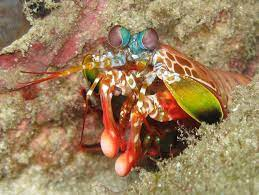

Stomatopoda, nome cientifíco Odontodactylus scyllarus, (ou estomatópode), chamados popularmente de tamarutacas ou de lacraias-do-mar no Brasil, é uma ordem de crustáceos marinhos da subclasse Hoplocarida, que agrupa cerca de 400 espécies, caracterizadas principalmente pela morfologia da segunda pata torácica, que é modificada em apêndice subquelado, lembrando uma pata de louva-a-deus.
| Reino: | Filo: | Subfilo: | Classe: | Subclasse: | Ordem: |
| Marinho | Arthropoda | Crustacea | Malacostraca | Hoplocarida | Stomatopoda |
Os estomatópodes são predadores ativos que caçam presas com o auxílio de um sentido de visão muito apurado e capaz de interpretar polarização no espectro ultravioleta e infravermelho.
